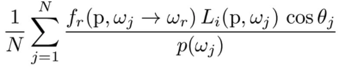

Building a path tracer was fun and challenging. Our path tracer is able to generate rays and perform image to
camera transformations to display the correct views. We also implemented rendering acceleration algorithms and
various illumination techniques to quickly render low noise and high quality scenes. We enjoyed learning about the
various aspects involved in ray tracing.
Unfortunately our schedules conflicted so we split up tasks. This strategy is definately not ideal
since each part builds upon one another. While this apporach may work in other cases where you
can abstract away the details, it is much more difficult here. It would probably have been quicker to work
together on
each part and we hope to do so in the future.
Task 1: Ray Generation and Scene Intersection
Before we can begin path tracing, we must first generate camera rays. To do this, we transformed
normalized image coordinates to normalized camera coordinates based on field of view angles along the x and y
axis (\(hFov\) and \(vFov\)), and a camera-to-world transformation matrix. We make sure to constrain the near and
far clipping planes as the minimum and maximum render distances for the newly constructed ray.
After ray generation, we need to ray trace the pixel by generating a specified number of random rays within a unit
grid of the pixel, and obtaining a Monte Carlo estimate of the scene radiance for each pixel.
In the next part of the rendering pipeline, ray-triangle intersection and ray-sphere intersection were also
implemented to determine if our rays have hit any objects in the scene, and to compute the nearest intersection
point. For ray-triangle intersection, we based our method on the Möller-Trumbore intersection algorithm. In this
method, we do not need to precompute the plane that contains our triangle, increasing efficiency. First, by taking
the scalar triple product of the two edges, \(E1\) and \(E2\), and the ray direction, \(D\), we find out if the
ray is parallel to the triangle, and return false when the result is zero. This means that the ray did not hit the
triangle normal. Next, we compute the \(u\) and \(v\) barycentric coordinates using principles from Cramer's Rule
and make sure the values are not negative, and their sum is within 1 for a potential valid intersection. Finally,
we compute the intersection point, \(t\), and make sure it's positive and within our clipping plane bounds. We
then are also able to compute the intersection normal vector by doing a normalized barycentric interpolation with
the vertex normals.
Ray-sphere intersection was performed with a similar idea that our intersection point should be between our
clipping plane bounds, but implemented by solving the quadratic formula for two distances, and taking the closer
as our return intersection point.
Spheres with normal shading
Gems with normal shading
Task 2: Bounding Volume Hierarchy
We now implement a bounding volume hierarchy (BVH) to accelerate our rendering times from \(O(n)\) to
\(O(log(n))\). Before max_leaf_size is reached, only leaf nodes are created and we simply return our
basic contructed node. Otherwise, we will create the BVH structure. We pick the most beneficial
axis to split the bounding box based on the longest extent. This yields higher likelihood that we won't split too
unevenly. We then pick out splitting point based on the average of the centroids along the axis we chose. The list
of primitives are then sorted from small to large based on the chosen axis, before we partition the list to only
contain primitives with centroids that are smaller than our splitting point. We then recursively construct the
left and right children of the current node. Along the way, we perform checks that we won't be spliting an empty
node or partition the list such that one side becomes empty.
Below are results comparing rendering times with and without BVH acceleration.
Cow with normal shading
Lucy with normal shading
Input File
BVH Accelerated
Render Time (s)
Rays per second (million)
cow.dae
X
16.8076
0.0103
✓
0.0309
3.9815
CBlucy.dae
X
664.1852
0.0003
✓
0.0562
2.5367
Implementing BVH significantly sped up our renders, especially on larger scenes. Rendering the cow is 544x
faster than before, and rendering Lucy, a moderately complex scene, is 11818x faster! Unsurprisingly, the average
number of rays per second traced also skyrocketed. We were surprised by the amount of performance gain from the
BVH and really appreciate the tree structure now.
Task 3: Direct Illumination
We implemented Direct Lighting with uniform hemisphere sampling by approximating the integral
over all the light arriving in a hemisphere around hit_p. The reflection equation integral can be approximated using the
following Monte Carlo estimator.

Monte Carlo Estimator of the Reflection Equation
We take num_samples samples of directions in a uniform hemisphere. We then construct
a ray from hit_p in the sampled direction and test if it intersects a light source. If so, to get the outgoing
light we use the Monte Carlo Estimator: we multiply the evaluated BSDF with the incoming radiance. We also take into
account Lambert's cosine
law and divide by the pdf. We take an average of these outgoing lights by accumulating and dividing by the number
of samples.
To implement importance sampling, we can use the same Monte Carlo Estimator. Instead of sampling uniform
directions in a hemisphere, we will sample all lights directly. For each light (unless it's the light source), we
construct sample num_samples directions. For each direction, we construct a ray and if there are no intersections, we proceed
using the estimator similar to hemisphere sampling above. Again we take an average.
Bunny rendered using hemisphere sampling
Bunny rendered using light sampling
Spheres rendered using hemisphere sampling
Spheres rendered using light sampling
For the most part, light sampling seems to provide the superior result. Rendering using
hemisphere sampling results in a generally more noisy image as opposed to light sampling.
This is most notable as seen in the background walls. The bunny itself is also noisier.
However the light seems more realistic using hemisphere sampling. The blurring on the side
is more realistic than the almost perfect shape rendered by light sampling. Though the light may
look better using hemisphere sampling, due to the overall noise we prefer light sampling.
1 sample per pixel and 1 light ray
1 sample per pixel and 4 light ray
1 sample per pixel and 16 light ray
1 sample per pixel and 64 light ray
When we keep the number of samples per pixels constant at 1, we can see that increasing
the number of light rays decreases noise.
Task 4: Global Illumination
While we have implemented direct illumination where light rays directly hit objects, we haven't
accounted for indirect illumination where light rays bounce off objects. To implement indirect illumination,
we need to know the bouncing incoming radiance of an object. However, rays bounce also off other objects and thus need recursion. To prevent infinite recursion, we can
employ Russian Roulette where there is a chance to terminate the bouncing ray (we used .3 of terminating).
We can also terminate if we bounce max_ray_depth times. Then if we don't terminate, we construct a ray using a
sampled direction.
If we have an intersection, we use the reflection equation once again where the incoming radiance is a recursive
call.
Below are examples of global illumination.
Bunny rendered with global illumination
Dragon rendered with global illumination
Below is direct and indirect illumination.
Bunny rendered with only direct illumination
Dragon rendered with only indirect illumination
Below we experiment with differing max_ray_depth values.
Bunny rendered with max_ray_depth = 0
Bunny rendered with max_ray_depth = 1
Bunny rendered with max_ray_depth = 2
Bunny rendered with max_ray_depth = 3
Bunny rendered with max_ray_depth = 100
When max_ray_depth = 0, we return a Vector3D(0, 0, 0). This can be seen as we only render
the zero bounce illumination. When max_ray_depth = 1, we basically have only direct illumination.
When max_ray_depth >= 2, we can see that the ceiling gets rendered. Everything else also gets
brighter. As max_ray_depth > 2 increases, we notice things get brighter but the differences become less
noticable.
Sample-per-pixel rate = 1 and 4 light rays
Sample-per-pixel rate = 2 and 4 light rays
Sample-per-pixel rate = 4 and 4 light rays
Sample-per-pixel rate = 8 and 4 light rays
Sample-per-pixel rate = 16 and 4 light rays
Sample-per-pixel rate = 64 and 4 light rays
Sample-per-pixel rate = 1024 and 4 light rays
Task 5: Adaptive Sampling
We implemented adaptive sampling in order to more efficiently render our images. If a pixel converges quickly, we
stop sampling, and obtain our radiance average for that pixel by diving the total
radiance by the number of samples seen so far. If a pixel is slow to converge, we carry out the maximum number of
random samples, when applicable. Adaptive sampling becomes more efficient when many pixels converge quickly, and
do not require the full number of samples to accuratly represent the final color.
The convergence criteria is based on the mean, \(\mu\), the standard deviation, \(\sigma\), and the number of
samples taken so far, \(n\). The following equations decribe the convergence criteria, with \(s1\) and \(s2\) being
the sum of illuminance so far and the sum of squares of illuminance so far, respectively. The magic number 1.96
comes from solving for a confidence interval of 95% that we are in our pixel's desired illuminance based on the
\(n\) pixels so far.
The results of rendering the bunny scene with 2048 sampls per pixel and adaptive sampling yields
crisp results with a fast rendering time. The sample rate image confirms that we have sampled varing amounts for
each pixel throughout the image, with blue areas representing low sampling rates, green areas representing medium
sampling rates, and red areas representing high sampling rates.